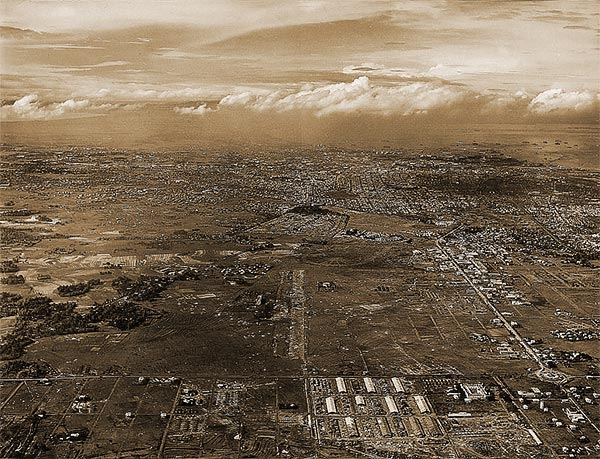

|
j
a v a s c r i p t |
Pg.1/6
February 19, 1945
Just before midnight last night, a Japanese mortar sent ten shells into the center of Manila, one of which landed in an unoccupied room in Santo Tomas. No one was hurt. Quick as a flash, a Piper Cub took off from Grace Park just as the mortar changed their aim toward us. Five shells landed so close I had to call Ma to come downstairs. One shell landed near the Ygoa house before the Piper Cub droned into that area. The shooter stopped and maybe moved before the American retaliation began. The rest of the night was peaceful. Santo Tomas doesn't refuse a hospital case no matter what nationality. Several Germans have entered the camp's hospital — one couple under false pretenses even. Internees are crying for "justice," saying the Germans are living like kings — meaning getting three square meals a day. . . . .

Grace Park Airfield in Caloocan
|
|
|
|
|